02 Network Theorems
Network Theorems
If a number of voltage or current sources are acting simultaneously in a linear network, the resultant current in any branch is the algebraic sum of the currents that would be produced in it, when each source acts alone replacing all other independent sources by their internal resistances. i.e., all independent voltage sources & independent current sources are short circuited and open circuited respectively.
Points to remember
Do not disturb the dependent sources present in the network.
It is Not applicable for circuit having initial condition.
It is Not applicable to power calculation.
It is only applicable to the circuit which is valid for the ohm’s law (i.e., for the linear
circuit). Reactive element with sources operating at different frequency, this theorem is alone
useful to find the output/response in the circuit. It is Not applicable to Non-linear elements, unilateral elements (i.e., diode or BJT).
Whenever two ideal voltage sources connected in a parallel or two ideal current sources
connected in a series then don’t apply superposition theorem.
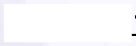
If a circuit excited by more than one sources, then total power dissipated in the resistive
part is Not the SUM of the power due to each source acting alone with all other sources said to zero.
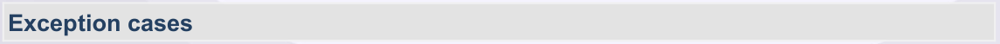
Case I : If different frequency operating on the circuit, then total power (P)
●
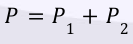
Case II : If two sinusoidal source are of same frequency but phase difference is 90°
operating on the Network, then total power is given by
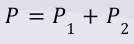
Case III : If D.C. Network excited by voltage source & current source, then total power in
the Network is equal to the SUM of power generated by voltage source alone & current source alone.
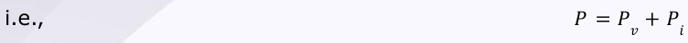
D.C. sources. Let, P 1 = Power consumed by resistance due to first source only. P 2 = Power consumed by resistance due to second source only.
Now, if both the sources are acting simultaneously then, Maximum & minimum Power are given as 2
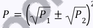
Here, {+ 𝑓𝑜𝑟 𝑚𝑎𝑥𝑖𝑚𝑢𝑚 𝑃𝑜𝑤𝑒𝑟 − 𝑓𝑜𝑟 𝑚𝑖𝑛𝑖𝑚𝑢𝑚 𝑝𝑜𝑤𝑒𝑟
For three sources:
2
Any two terminal bilateral linear D.C. circuit can be replaced by an equivalent circuit consisting of a voltage source & a series resistor.

V Th = Thevenin’s open circuit voltage b/w X and Y
R Th = Thevenin’s Resistance or Equivalent resistance b/w X and Y
For A.C. circuits:
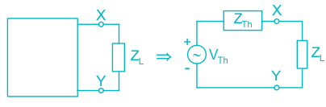
Z Th = Equivalent impedance b/w X and Y.
Case I: Circuit with both dependent & Independent source
Method 1: Using Test source:
●
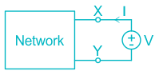
R Th can be calculated by:
Remember :
In this method, set all independent sources equal to zero.
Method 2 : Using short circuit current:
●
R Th can be calculated by:
𝑉 𝑇ℎ
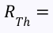
𝐼 𝑠𝑐 Where, I sc = short circuit current through terminals X, Y.
Case II: Circuit with dependent sources only
In this case,
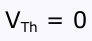
& I sc = 0 A R Th = Input resistance looking b/w terminals X & Y with turning off all independent sources.
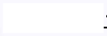
It is Not applicable to circuit containing Non-linear & unilateral element.
The load can be linear or Non-linear.
There should not be any coupling between load and network elements.
●
It states that, a two terminal linear bilateral Network can be replaced by equivalent circuit consisting of current source (I sc) in parallel with Norton’s equivalent resistance (R N) or Impedance (Z N).
Here, I sc = short circuit current at the terminals.
Norton is a dual of Thevenin’s Theorem.
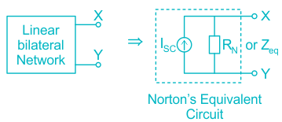
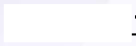
| Condition | Thevenin’s Theorem | Norton’s Theorem |
|---|---|---|
| ● If R = ∞ Th ● If R = 0 Th | Thevenin’s equivalent Not possible Thevenin’s equivalent possible | Norton’s equivalent possible Norton’s equivalent Not Possible |
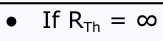
This theorem is used to find the value of load resistance for which there would be
maximum amount of power transfer from source to load. It is applicable when the load is variable.
But, if the load is not variable, then choose minimum internal impedance of the source
that results maximum current flow through the fixed load.
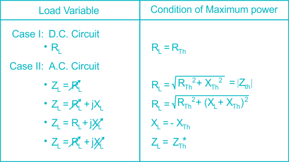
Maximum Power delivered to the load R L:
2 𝑉 𝑇ℎ
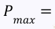
4𝑅 𝑇ℎ
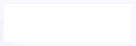
If R L <R Th, then Efficiency (η) < 50% If R L = R Th, then Efficiency (η) = 50% If R L >R Th, then Efficiency (η) > 50%
In a linear, bilateral passive Network, the ratio of excitation to the response is constant even though the source is interchanged from input terminals to output terminals.

𝑉 2
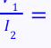
𝐼 1 𝑜𝑟 𝑍 12 = 𝑍 21
This theorem is applicable only to single source Network & Not in multisource Network.
The Network Should Not have any time-varying element.
In this theorem, the initial conditions are supposed to be zero.
The units of Excitation/response should be either Ohm or mho.
●
The Algebraic SUM of instantaneous power in a lumped Network is equal to zero.
●
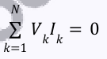
This theorem is independent of Nature of the element.
It is based on conservation of energy or power.
This theorem is applicable when two Network having same graph.
This theorem is valid as long as KVL, KCL are applicable.
●
When a number of voltage source (V 1, V 2, ….,V n) are in parallel having internal resistance (R 1, R 2,…. R n) or internal impedances (Z 1, Z 2,.…. Z n) respectively, the arrangement can be replaced by a single equivalent voltage source V in series with an equivalent series resistance R or impedance Z.
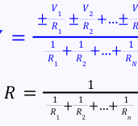
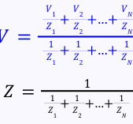
In a linear time-invariant Network when the resistance (R) of an uncoupled branch, carrying a current (I), is changed by (ΔR), the current in all the branches would change & can be obtained by assuming that an ideal voltage source of (V C) has been connected such that V C = I (ΔR) in series with (R + ΔR) when all other sources in the network are replaced by their internal resistances.
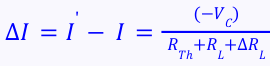
{ V C = I (ΔR L) & it is termed as compensating voltage }
Ideal voltage source V C connected in series.
Bridge circuit (if not balanced) Potentiometer